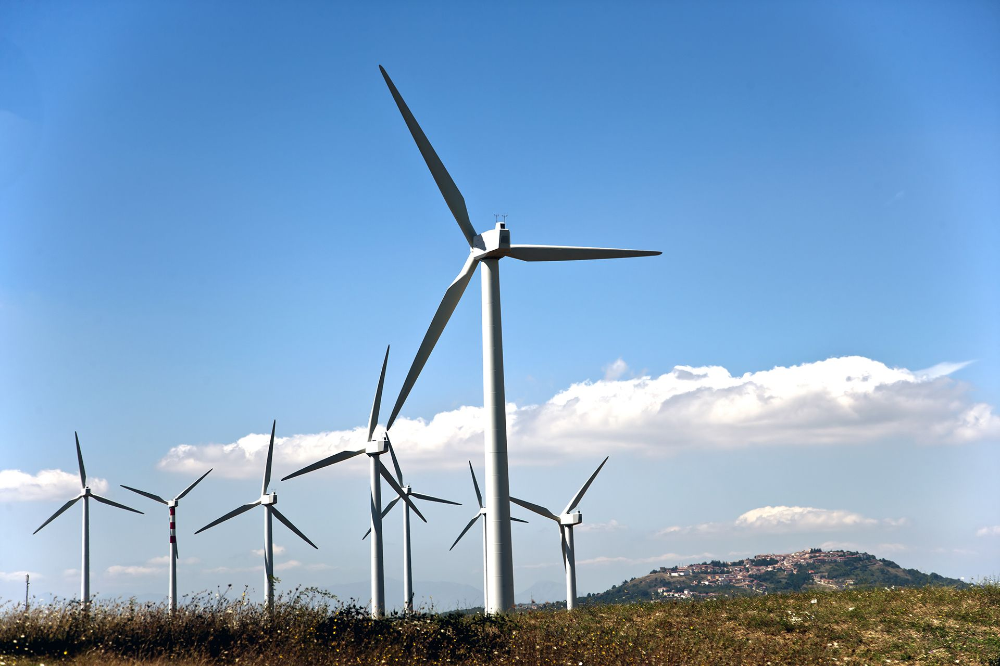

Exploradores del clima
"¡Exploradores del Clima!
Creamos nuestra propia agencia de viajes sostenibles"
Centro de interés o temática
La temática central es el estudio de los climas y paisajes del mundo, con especial interés a las Energías Renovables, con un enfoque especial en la sostenibilidad y el impacto humano. El centro de interés es la creación de una "Agencia de Viajes Sostenibles" por parte del alumnado. Esto transforma el aprendizaje teórico en una experiencia práctica y motivadora, donde los estudiantes se convierten en expertos geógrafos que deben asesorar a posibles viajeros sobre los destinos más adecuados según sus preferencias, pero siempre velando por el respeto al medio ambiente y las culturas locales.
Nivel al que va dirigido
6º de Educación Primaria (11-12 años). Este nivel es ideal porque los estudiantes poseen la madurez cognitiva para manejar conceptos abstractos como "clima", "latitud" o "sostenibilidad", y las habilidades digitales y de trabajo en equipo necesarias para desarrollar el proyecto final (una presentación o folleto interactivo).
Temporalización aproximada
La SDA está diseñada para desarrollarse a lo largo de 6 semanas (aproximadamente 6-7 sesiones de 60 minutos). Esta duración permite una secuencia lógica: exploración (semanas 1), desarrollo y estructuración del conocimiento (semana 2), y aplicación-creación y comunicación del producto final (semana 3).
Materia o materias implicadas
Se plantea como un proyecto interdisciplinar que integra:
Conocimiento del Medio: Eje principal del proyecto. Se estudian los climas (cálidos, templados, fríos), sus características (temperaturas, precipitaciones) y los paisajes (flora, fauna, ríos) que generan.
Lengua Castellana y Literatura: Fundamental para la búsqueda de información, la comprensión lectora de textos geográficos, la elaboración de textos descriptivos para los folletos y la exposición oral final.
Educación Artística (Plástica): Para el diseño del folleto, el cartel publicitario o la presentación digital, cuidando la estética y la comunicación visual.
Educación en Valores Cívicos y Éticos: El hilo conductor de la "sostenibilidad" es el núcleo de esta materia, trabajando el respeto por el medio ambiente, el consumo responsable y la valoración de la diversidad cultural.
Idioma
Castellano. Todo el proceso de enseñanza-aprendizaje, los materiales de aula y el producto final se desarrollarán en lengua castellana, trabajando de forma específica el vocabulario técnico asociado a la geografía y el clima.
Descripción general de lo que se pretende que el alumnado aprenda o trabaje
El alumnado, organizado en equipos cooperativos, se convertirá en una "Agencia de Viajes Sostenibles". Su misión será investigar a fondo un clima y paisaje específico (por ejemplo, el clima mediterráneo, el oceánico, el de alta montaña, etc.) para, posteriormente, diseñar un folleto informativo o una presentación digital (ej. Canva, Powerpoint) atractiva y rigurosa.
En este folleto, deberán:
Describir las características climáticas de su destino (temperaturas, lluvias, estaciones).
Identificar el paisaje típico (relieve, ríos, vegetación, fauna).
Proponer actividades turísticas que sean respetuosas con el entorno (senderismo, observación de aves, visitas a mercados locales, etc.).
Incluir recomendaciones para un viaje responsable (qué ropa llevar, cómo minimizar el impacto ambiental, qué costumbres locales respetar).
El proyecto culminará con una "Feria de Turismo Sostenible" en el aula, donde cada agencia expondrá su destino al resto de la clase.
Justificación de los elementos (basada en la rutina de pensamiento)
Esta propuesta didáctica se justifica plenamente siguiendo una rutina de pensamiento que busca conectar el conocimiento con la acción y la realidad del alumnado. A continuación, se desglosa la justificación de cada elemento:
Centro de Interés (Agencia de Viajes Sostenibles): Se elige este centro porque conecta el aprendizaje con el mundo real y los intereses del alumnado. La rutina de pensamiento nos lleva a preguntarnos: ¿cómo hacemos tangible y relevante el estudio de los climas? La respuesta es a través de un rol (exploradores, agentes de viaje) que les resulta motivador y lúdico. "Viajar" es un tema que despierta curiosidad, y el reto de hacerlo de forma sostenible introduce un elemento de responsabilidad y pensamiento crítico.
Nivel (6º de Primaria): La elección de este nivel se justifica por la capacidad de abstracción y síntesis del alumnado. En la rutina de pensamiento, pasamos de la información a la comprensión profunda. Los alumnos de 6º no solo pueden memorizar los tipos de clima, sino que son capaces de establecer relaciones entre el clima, el paisaje, la actividad humana y las consecuencias del turismo, creando un conocimiento más complejo y significativo. Están en la etapa de desarrollar un pensamiento más sistémico.
Temporalización (3 semanas): La duración respeta el ciclo de investigación, estructuración y aplicación. Una rutina de pensamiento efectiva necesita tiempo para:
Explorar (1ª semana): Activar conocimientos previos y despertar la curiosidad.
Conectar y profundizar (2ª semana): Organizar la nueva información, establecer vínculos entre conceptos y debatir.
Desafiar y crear (3ª semana): Aplicar lo aprendido a un nuevo contexto (el folleto) y comunicar las conclusiones, generando un producto tangible que evidencia el aprendizaje.
Materias Implicadas (Interdisciplinariedad): Esta integración es clave porque el mundo real no se divide en asignaturas. La rutina de pensamiento nos invita a mirar desde múltiples perspectivas. Un mismo hecho (un paisaje) puede ser analizado desde su origen geográfico (Sociales), descrito con un texto literario o expositivo (Lengua), representado visualmente (Plástica) y juzgado éticamente en cuanto a nuestra interacción con él (Valores). Esta mirada multifocal enriquece la comprensión y la hace más profunda y duradera.
Idioma (Castellano): La elección del idioma se justifica por la necesidad de construir y utilizar un vocabulario específico.
Descripción General (Aprendizaje-Servicio simulado): Finalmente, lo que se pretende que el alumnado aprenda va más allá de los conceptos. Se busca que sean capaces de usar el conocimiento para actuar. La rutina de pensamiento culmina en la acción: "¿y ahora qué hacemos con todo esto?". El producto final (el folleto para la agencia de viajes) es la respuesta. No es un ejercicio memorístico, sino un acto creativo y comunicativo donde demuestran su comprensión al tener que explicar, recomendar y persuadir desde el conocimiento experto y la responsabilidad ética. Aprenden a ser ciudadanos informados y comprometidos con un futuro sostenible.
